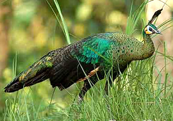
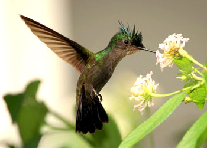
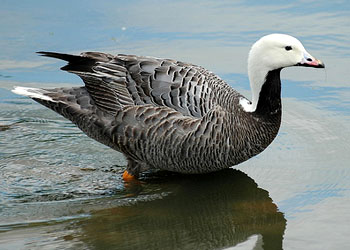
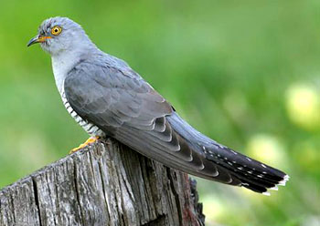

体均被羽，恒温，卵生，胚胎外有羊膜。前肢成翅，有时退化。多营飞翔生活。心脏是2心房2心室。骨多空隙，内充气体。呼吸器官除肺外，有辅助呼吸的气囊。全世界已发现9755种；我国有1294种（郑光美，2002）。可分为2个亚纲，其中古鸟亚纲Archaeornithes为化石纲，代表种有中生代的始祖鸟Archaeopteryx和孔子鸟Confuciusornis。今鸟亚纲Ratitae包括白垩纪的化石鸟类和现存的全部鸟类。三块掌骨愈合成一块，且近端与腕骨愈合成腕掌骨；尾推骨不超过13块，通常具尾综骨；胸骨较发达，少数为平胸，多数为突胸（具龙骨突起）。分为4个总目。其中齿颌总目Odontognathae为白垩纪的化石鸟类，口内尚有牙齿，代表种为黄昏鸟Hesperornis。
|  |  |
|---|---|
|  |  |